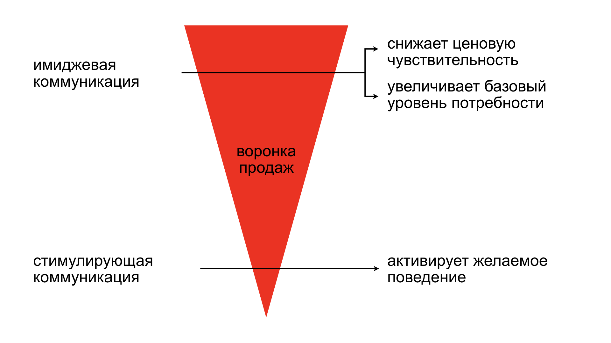
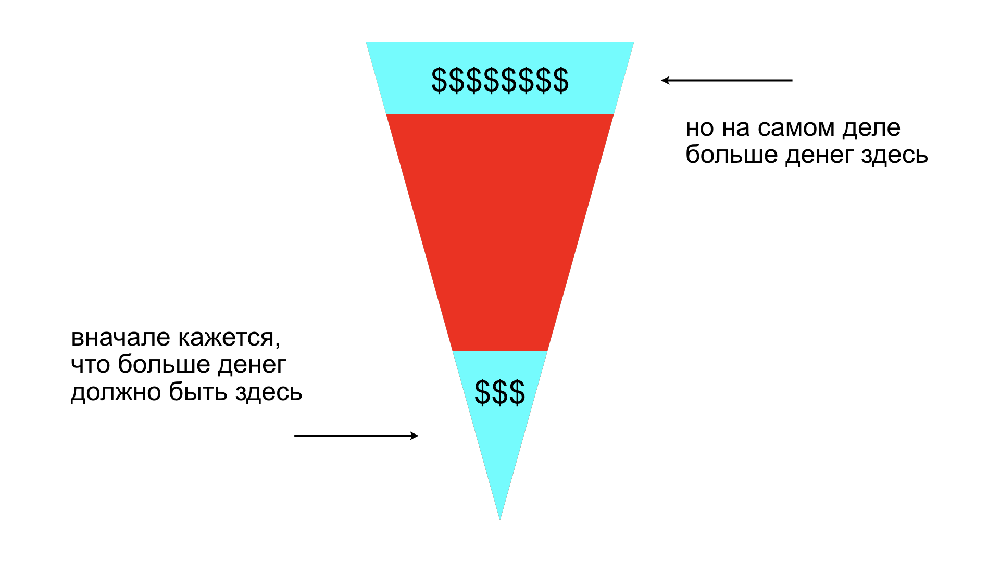
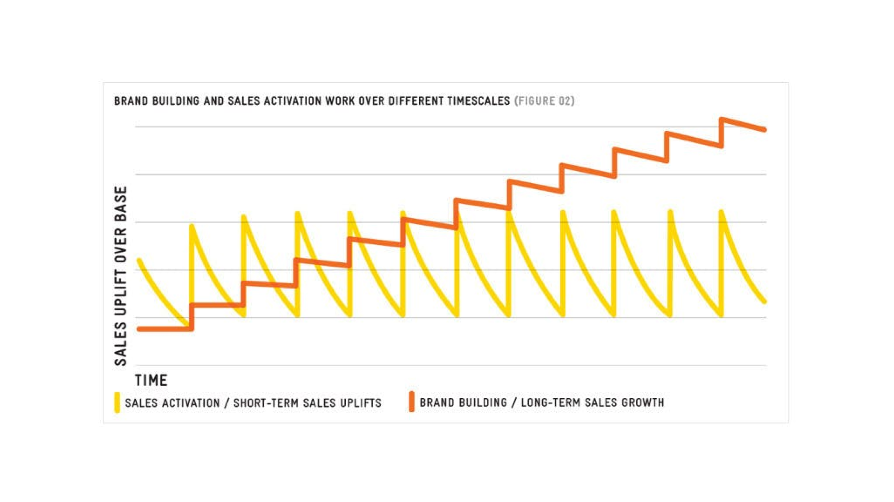

короче говоря
глобально коммуникационный бюджет можно потратить на две вещи: стимуляцию продаж и построение бренда.
многие выбирают первый вариант, потому что он дает быстрый результат, который легко измерить. начать инвестировать в бренд намного сложнее. эффект от таких инвестиций проявляется только в долгосрочной перспективе. зато у имиджевой коммуникации есть много других преимуществ.
имиджевая коммуникация увеличивает базовую потребность, снижает ценовую чувствительность и (sic!) увеличивает эффективность от стимулирующей коммуникации. поэтому лучше всего имиджевая и стимулирующая коммуникация работают вместе.
давайте сразу договоримся, что людям плевать на бренды. они не думают о брендах, не следят за брендами и не выражают себя с помощью брендов. маркетологам хочется думать наоборот, но нет. единственное полезное, что бренд дает человеку — это экономит его время. достаточно один раз попробовать бренд, чтобы понять, что от него ждать в будущем.
намного больше бренды нужны компаниям. и вот почему. глобально коммуникация может делать две вещи: формировать структуры памяти и стимулировать желаемое поведение. пример первого — это новогодние грузовики Кока-Колы, а второго — любое промо с накоплением баллов.

стимулирующая коммуникация
стимулирующая коммуникация находится ближе к концу воронки и конвертирует интерес человека в полезное для бренда действие. классное контекстное объявление по запросу курсов английского языка переводит человека на сайт онлайн-школы. это легко измерить, и на это понятно как повлиять. менеджеры любят такую определенность.
имиджевая коммуникация
имиджевая коммуникация наоборот работает на верхнем уровне воронки. она увеличивает базовый уровень потребности и снижает ценовую чувствительность. но измерить краткосрочный эффект от имиджевой коммуникации невозможно. чтобы измерить влияние силы бренда, в имиджевую коммуникацию нужно инвестировать систематически в течение длительного периода.
вначале может показаться, что больше денег лежит в стимуляция продаж. вы дали людям промокоды, они ими воспользовались. понятная цепочка. деньги находятся уже на следующем шаге после коммуникации. но денег в этом не так много, как хотелось бы.

стимулирующая коммуникация позволяет быстро вернуть маркетинговый бюджет. с 10 потраченных миллионов вы быстро вернете 12. с другой стороны имиджевая коммуникация позволяет вернуть с 10 миллионов 100. но не через месяц, а через несколько лет.
и я даже не начинаю рассказывать, что ждет бренды, которые плохо себя ведут и злоупотребляют стимулирующей коммуникацией. просто скажу, что за последние несколько лет распределять бюджет в пользу построения бренда начали не только такие бизнесы, как Adidas и Gap, но и диджитальные компании типа Booking и TripAdvisor 1.

любую эффективную стимулирующую коммуникацию надо поддерживать великолепной имиджевой. тогда и только тогда происходят чудеса. имиджевая коммуникация формирует структуры памяти, а стимулирующая активирует их в нужный момент, и переводит в продажи. они работают как инь и ян, одно дополняет другое, и только вместе они имеют смысл.
примеры одновременно креативных и эффективных работ
эффект от такого подхода можно продемонстрировать на креативных идеях, которые строятся вокруг стимулирующих механик. они простраивают бренд и вместе с этим стимулируют продажи (или установки и скачивания, как захотите). я покажу несколько таких работ и расскажу в чем их эффективность.
важный момент
работы, которые я приведу в качестве примера, основаны на стимулирующих механиках. но это не значит, что все рекламные кампании быть такими же. идея может строиться вокруг бренда, а стимулирующая составляющая — находиться на втором шаге.
посмотрите, например, какой классный имиджевый ролик для Фейсбука сняли Wieden+Kennedy. в нем нет ни промокодов, ни интерфейса, ни секретной ссылки для регистрации. но это не значит, что Фейсбук перестал считать юнит-экономику. скорее всего вместе с этим роликом они запустили догоняющие промопосты, и считали клики и переходы.
Whopper Detour
FCB New York для Burger King, США, 2019
в 2019 Бургер Кинг решил заняться собственным мобильным приложением. с появлением агрегаторов и диджитализации населения мобильное приложение стало драйвером роста для всей категории QSR (quickservice restaurants) 2 3.
кроме того, что приложение — это источник прибыли, это еще и источник данных о пользователях. а данные — это новая нефть.
Бургер Кинг хотел увеличить количество установок. до этого они уже предлагали бесплатный Воппер за установку. но это предложение терялось в потоке аналогичных предложений брендов, и люди не обращали на него никакого внимания 💁♂️
тогда FCB New York придумали парадоксальное решение. они усложнили механику получения бесплатного Воппера. теперь, чтобы получить Воппер, человек должен был приехать в Макдоналдс, установить приложение, зачекиниться, приехать в Бургер Кинг, и только потом получить Воппер.
Hungerithm
Clemenger BBDO для Snickers, Австралия, 2018
любой FMCG-бренд выстраивает и поддерживает отношения с ритейлерами. от этого зависит их бизнес 4. если вашего товара нет на полке, его не покупают. если его не покупают, вы не получаете прибыль. и неважно, насколько сильный у вас бренд или хороший продукт. на этом бизнес заканчивается.
у ритейлеров другая задача. им нужно привлекать покупателей. от этого зависит их бизнес. и больше всего на свете ритейлеры любят привлекать покупателей с помощью скидок.
для брендов в скидках мало хорошего. в краткосрочной перспективе они теряют часть прибыли, а в долгосрочной — воспринимаемую стоимость, то есть люди перестают покупать бренд без скидок.
Clemenger BBDO придумали способ, как дать ритейлерам скидку, а бренду — остаться классным и не потерять воспринимаемую стоимость.
Air Max Graffiti Stores
AKQA Sao Paulo для Nike, Бразилия, 2019
в 2019 году бразильский Nike решили развивать собственную ecommerce-площадку. и у них было два типа конкурентов: интернет-магазины, где люди уже покупают Nike, и крупные оффлайн-магазины с сопоставимым ассортиментом 5.
перестраивать привычки людей и объяснять, почему надо покупать именно у них, задача сложная. поэтому вначале Nike хотели привлечь внимание людей к запуску интернет-магазина и набрать минимальную аудиторию 5.
для этого AKQA Sao Paulo предложили Nike сделать (первый в мире?) гибридный дроп. для того, чтобы купить кроссовки в интернет-магазине, надо было выйти в оффлайн и найти граффити с их изображением. причем каждое граффити открывало доступ к определенной модели.
фактически AKQA придумали, как сохранить ощущение эксклюзивности дропа в онлайне и дать дополнительную ценность людям при покупке на сайте Nike. в результате кампании трафик на сайт вырос на 22%, а продажи увеличились на 32% 5.
источники
- The Long and the Short of it: Balancing Short and Long-Term Marketing Strategies, Les Binet, Peter Field, Institute of Practitioners in Advertising, 2013, IPA
- How Brands Grow: What Marketers Don’t Know, Byron Sharp, Oxford University Press, April 2010, Amazon
- How not to Plan: 66 ways to screw it up, Les Binet, Matador, July 2018, Amazon
-
Old Navy will shift back to brand-building in a growing trend among advertisers, CNBC, 2019 ↩︎
-
The strategy behind the Burger King stunt that dominated the 2019 Cannes Lions festival, 2019, Contagious ↩︎